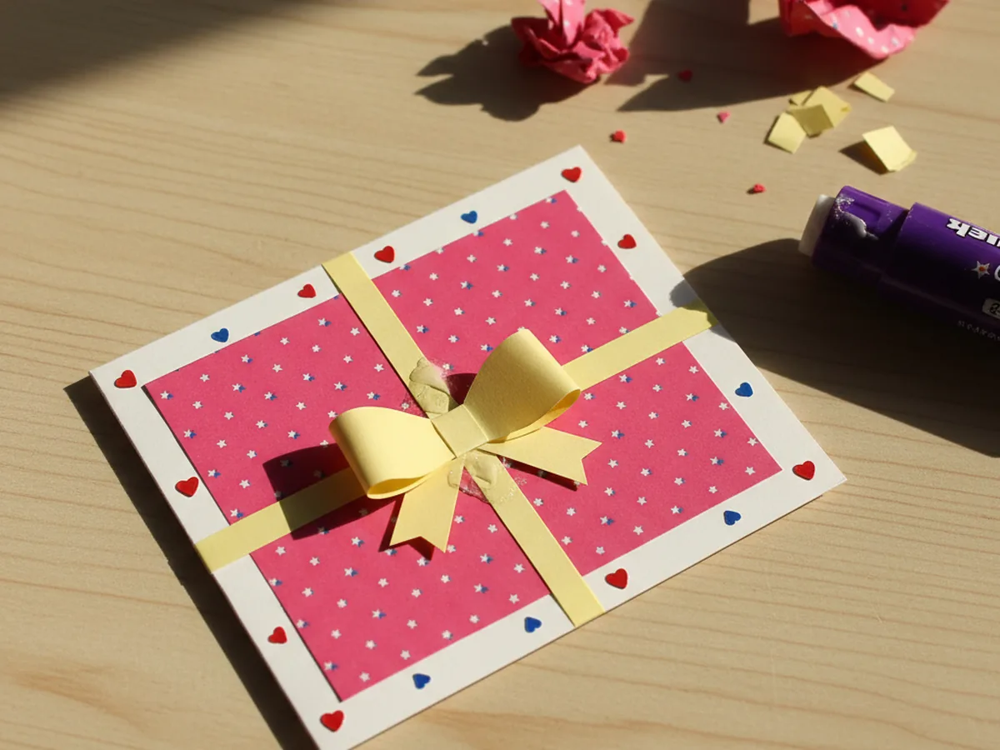
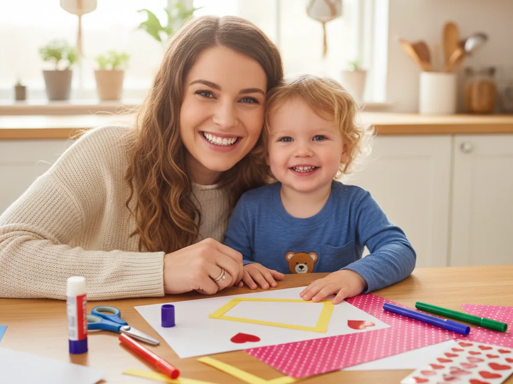
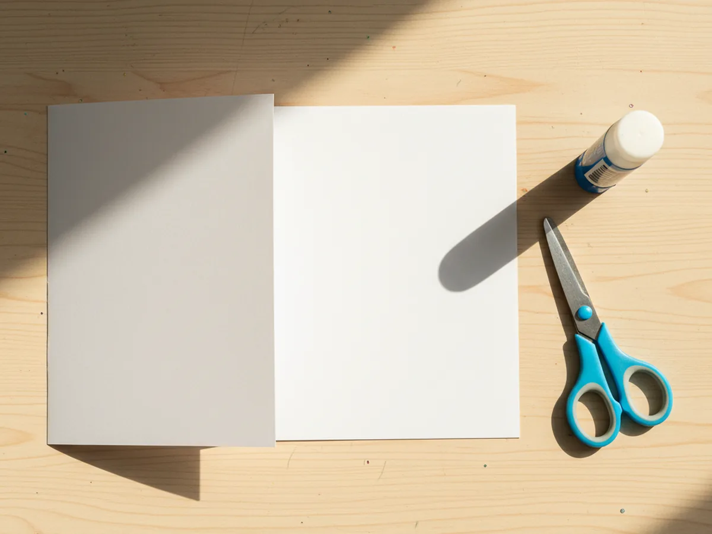
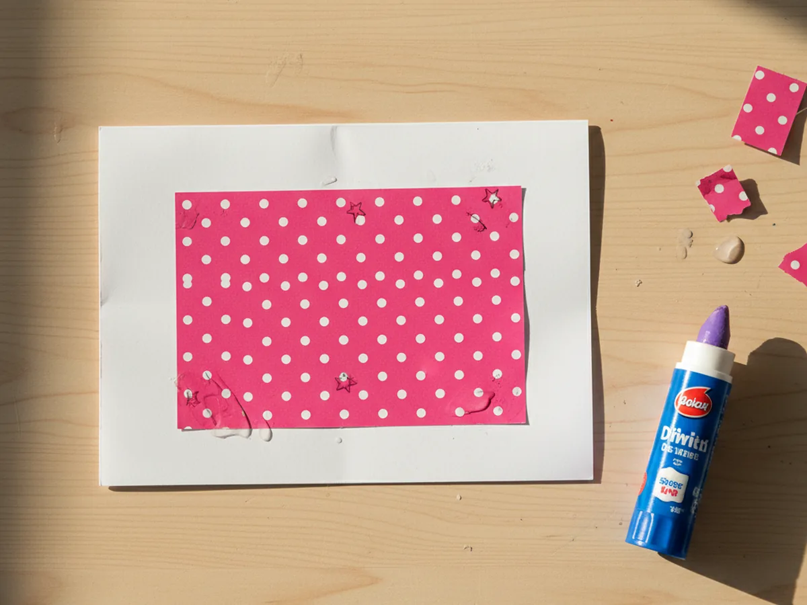
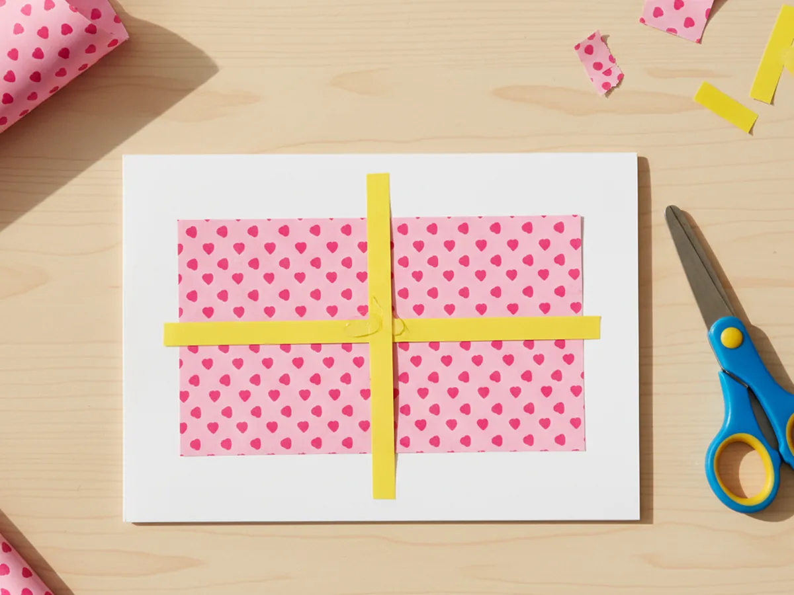
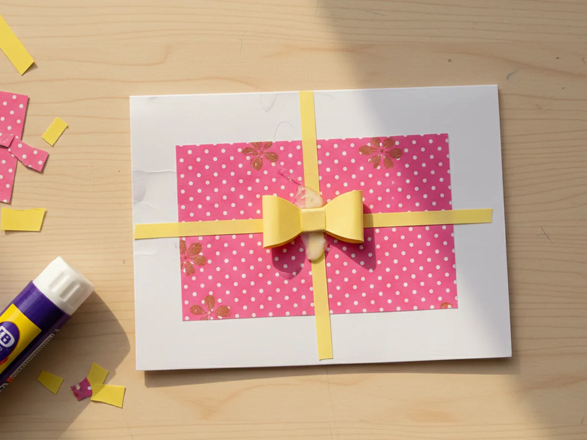
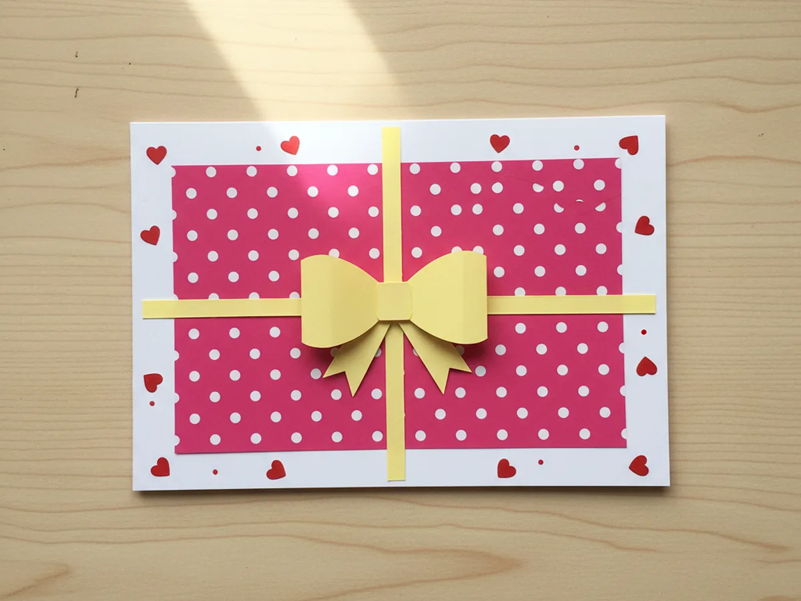
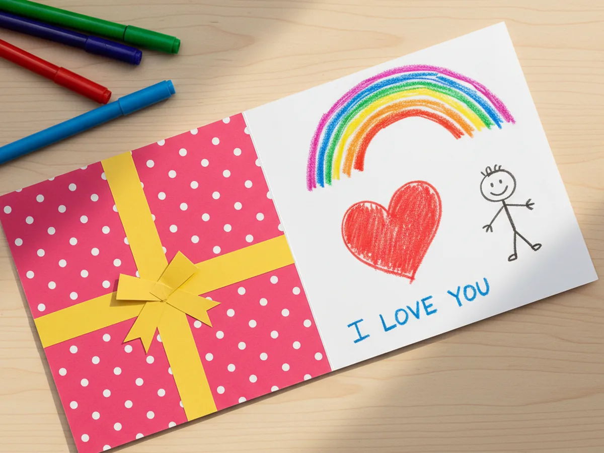

If you have ever wanted to make a homemade card with your child that looks like a tiny wrapped present, this gift paper craft is the perfect afternoon project. With one folded card base, a square of pretty paper, and two simple ribbon strips, you and your little one can build a sweet present card in about 25 minutes. 🎁
The whole project uses easy cuts and simple glue, so even a three-year-old can take ownership of the build. By the end you will have a charming little card that opens to reveal a handwritten message, ready to hand to someone you love.
Why Kids Love This Craft
There is something magical for kids about making something that looks like a real present. Watching a flat piece of paper turn into a card shaped like a wrapped gift, complete with ribbon and a bow, gives little ones that proud "I made this" feeling that lights up the kitchen table. It feels grown-up, useful, and full of love.
This easy gift paper craft also sneaks in real skill-building. Folding the card teaches early symmetry, cutting the ribbon strips builds fine motor control, and placing the bow in the middle strengthens hand-eye coordination. Because every shape is small and forgiving, even crooked cuts still look like part of the charm. The final card hides a lot of imperfection behind that cheerful ribbon and bow.
And then there is the giving part, which is honestly the sweetest piece. Once the present card is finished, your child gets to pick a person to give it to, decide what to draw inside, and watch that person's face light up when they open it. This kind of paper gift craft for kids sits right in the sweet spot of simple to make and meaningful to give. 💛

What You'll Need
Here is everything you need to make this gift paper craft together at home. Set each supply out before you sit down so the project flows smoothly and no one has to hop up mid-craft.
- Astrobrights Cardstock, 65 lb, Primary 5-Color Assortment (250 Sheets), sturdy enough to give the card a real present-like feel that holds its shape.
- Crayola Construction Paper (240ct, 12 Assorted Colors), perfect for the colorful "wrapping" rectangle, ribbon strips, and bow.
- 12x12 Bloom Double-Sided Patterned Cardstock Pad (24 Sheets), gives a beautiful printed-paper look so the present card feels extra special.
- Fiskars 5 Inch Blunt-Tip Kids Scissors (3-Pack), safe blunt blades that still cut paper cleanly for little hands.
- Elmer's All Purpose School Glue Sticks (30 Count), clean and washable so the ribbon and bow stick down with no wet mess.
- Yansanido Colorful Heart Self-Adhesive Stickers (1512 Pcs), adorable little hearts to scatter around the present card for extra sparkle.
- Crayola Broad Line Markers (10 Classic Colors), for decorating the inside with rainbow drawings, hearts, and short messages.
- Sharpie Permanent Markers, Fine Tip, Black (12 Count), for writing a clean little message that the grown-ups can read at first glance.
- A pencil, for lightly sketching the wrapping rectangle and ribbon strips before cutting.
- A ruler, for measuring even strips so the ribbon looks neat across the front.
Step-by-Step Instructions
This gift paper craft is genuinely forgiving and beginner-friendly, so go at your child's pace, let them help with every cut and glue, and have fun watching the little present card come to life together.
Step 1: Fold the Card Base
Start with one sheet of solid color cardstock, around 8.5 by 11 inches. Lay it flat on the table, then fold it cleanly in half so the short edges meet, forming a rectangular card with the fold along the left side. Crease the fold firmly with a fingernail or the side of a closed glue stick. The folded cardstock will become the body of your paper present card, so a crisp fold here makes everything else look polished.
Let your child press down on the crease and run their finger along it a few times. Kids love this part because the simple fold immediately starts to feel like a real card.

Step 2: Glue the Wrapping Paper Rectangle
Now for the colorful "wrapping" that gives this gift paper craft its present-like look. Cut a rectangle of bright patterned paper or colored construction paper, slightly smaller than the front of the folded card. Aim for about half an inch of white border showing all the way around so the wrapping looks framed. Run a glue stick along the back of the rectangle and press it firmly onto the front of the card, centering it as best you can. Smooth from the middle outward to chase out any air bubbles.
Let your child pick the wrapping color. Bright pink, sunshine yellow, or polka-dot pastel paper all work beautifully and instantly say "present."

Step 3: Add the Ribbon Strips
Time to give the present its ribbon. Cut two long thin strips of contrasting paper, each about half an inch wide. One strip should be tall enough to run from the top of the wrapping rectangle to the bottom, and the other should be wide enough to run from one side to the other. Glue the vertical strip down the middle of the wrapping first, then glue the horizontal strip across the middle so the two strips form a clean cross. The wrapped present paper craft is really starting to look like a gift now.
Let your child trim the ends of the ribbon flush with the edges of the wrapping rectangle. This is a satisfying little detail that makes the present card look extra finished.

Step 4: Make and Attach the Bow
Now for the cutest part of the whole gift paper craft. Cut a short strip of the same ribbon-colored paper, around three inches long and one inch wide. Bring the two short ends in to meet in the middle so they form two little loops on either side, and glue the ends down to hold the loops in place. Then cut a tiny rectangle, about half an inch wide, and wrap it around the center pinch point to hide the join and make a clean band. Glue the finished bow right where the two ribbon strips cross on the front of the card.
Let your child press the bow down with a flat hand for ten seconds. Pressing helps the glue grab so the bow does not lift up at the corners.

Step 5: Add the Finishing Touches
This is where the cute gift paper craft gets its personality. Peel a few small heart stickers and scatter them around the white border outside the wrapping rectangle. Add a few colorful dots with a marker between the stickers, or draw tiny stars, swirls, or confetti shapes to make the card feel celebratory. Keep the decorations light so the wrapped present in the middle still stays the star of the show.
Encourage your child to take the lead on the placement. A slightly random scatter of hearts actually looks more cheerful than a perfectly even pattern, and it gives the card a sweet handmade feel.

Step 6: Open and Write the Message Inside
Carefully open the folded card to reveal the blank inside. Let your child draw, write, or dictate a sweet little message. Younger kids might scribble a heart, a small rainbow, or a wobbly "I love you," while older kids might write a real note for a grandparent, a teacher, or a sibling. Once the inside is decorated, gently close and reopen the card a few times to make sure the fold still feels crisp. Hand the finished greeting card to your little one and let them pick the lucky person it goes to. ✨
Pop the finished card into an envelope or hand it over with a hug. A handmade gift paper craft like this one tends to stick around on the fridge for weeks because every time someone walks past, they smile.

Variations to Try
Birthday Cake Version: Swap the wrapping rectangle for a tall layered cake shape made of two stacked colored paper bands. Add a few thin candle strips at the top with tiny tissue paper flames and the present card instantly becomes a birthday card.
Pop-Up Surprise Inside: Glue a smaller folded paper square inside the card that opens up to reveal a hidden message, drawing, or photo. Kids love the little surprise reveal and it turns the activity into a sweet keepsake.
Real Ribbon Edition: For an older child, swap the paper ribbon for actual satin ribbon glued onto the wrapping. Tie a tiny ribbon bow with mom's help for a fancier gift-shop feel.
Final Thoughts
This gift paper craft is one of those quiet little projects that looks like it took real talent, but actually comes together with one fold and a few snipped strips. The finished present card becomes a tiny family memory, and the proud look on your child's face when they hand it to Grandma or Dad is honestly the best part of the whole afternoon. 🎀
If your child loved making this card, save the tutorial on Pinterest so you can come back to it for the next birthday, holiday, or just-because day, or share it with a friend looking for a sweet handmade-gift activity. Happy crafting, friend.
More Crafts You'll Love
If your little one enjoyed making this present card, they will love these other sweet paper crafts next: